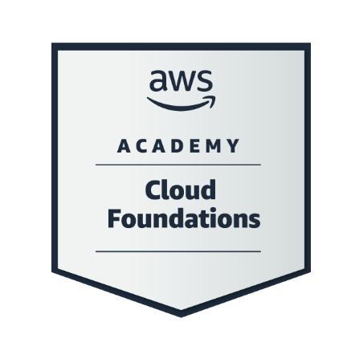

Dessanène Sanhan
Passionné de Cybersécurité
Étudiant en BTS SIO - Option SISR
À Propos 👨💻
Salut, moi c'est Dessanène Sanhan.
Je suis actuellement étudiant à l'Institution Beaupeyrat de Limoges en deuxième année de BTS SIO (Services Informatiques aux Organisations), option SISR (Solutions d'Infrastructure, Systèmes et Réseaux). J'ai toujours eu une forte attirance pour l'informatique, car mon objectif à court terme est de devenir technicien de maintenance et d'infrastructures systèmes et réseaux. C'est dans cette perspective que je me suis naturellement orienté vers cette formation.
Compétences 🛠️
Langages Pratiqués 💻
Les différents langages que j'ai pu rencontrer et pratiquer lors de ma formation.
Python
Langage de programmation polyvalent pour le développement d'applications et l'automatisation.
HTML
Langage de balisage pour la création de pages web structurées.
CSS
Langage de style pour la mise en forme et le design des pages web.
Java
Langage orienté objet pour le développement d'applications robustes.
PHP
Langage de programmation pour le développement web côté serveur.
SQL
Langage de requête pour la gestion et manipulation des bases de données.
Linux
Système d'exploitation open-source, maîtrise des commandes et de l'administration système.
Outils & Logiciels utilisés ⚙️
Les différents outils et logiciels que j'ai rencontrés et utilisés lors de ma formation.
PuTTY
Émulateur de terminal pour Windows permettant la connexion SSH sécurisée.
Packet Tracer
Simulateur de réseau Cisco pour la conception et test d'infrastructures réseau.
GitHub
Plateforme de gestion de versions et de collaboration pour le code source.
MySQL
Système de gestion de base de données relationnelle open-source.
XAMPP
Suite logicielle permettant de mettre en place un serveur web local.
MobaXterm
Terminal avancé pour Windows avec support multi-protocoles et interface graphique.
📚 Stages
Stage 1 - OGEC BEAUPEYRAT
27 mai - 28 juin 2024Durant ce stage, j'ai été impliqué dans :
- La gestion de l'infrastructure informatique
- La configuration des serveurs et des outils de supervision
- L'optimisation du réseau
- La mise en place de mesures de sécurité système
Stage 2 - Arène Informatique
6 janvier - 21 février 2024Pendant ce stage, mes responsabilités incluaient :
- La maintenance de l'infrastructure
- La surveillance des systèmes et réseaux
- La résolution des incidents
- La documentation des procédures de maintenance
Projets – Réalisations Techniques 🚀
Durant ma formation, j'ai participé activement à de nombreux projets techniques, développant des compétences variées en administration réseau et gestion de serveurs. Ces projets ont été réalisés en collaboration, renforçant mes capacités de travail en équipe.
Première Année
Configuration Serveurs LAMP
Installation et configuration de serveurs Linux pour applications web dynamiques (Mission 2)
Gestion DNS avec BIND
Configuration d'un serveur DNS pour la résolution de noms de domaine (Mission 3)
Serveur FTP Sécurisé
Mise en place de ProFTPD pour des transferts de fichiers sécurisés (Mission 5)
Virtual Hosts Apache
Configuration d'hôtes virtuels pour l'hébergement multi-sites (Mission 6)
Sécurisation SSL/TLS
Implémentation de certificats pour des connexions sécurisées (Mission 7)
Pare-feu Netfilter
Configuration de règles de pare-feu pour la protection réseau (Mission 8)
Deuxième Année
Services MariaDB
Déploiement et gestion de bases de données (Mission 5)
DHCP Failover
Configuration de services DHCP haute disponibilité (Mission 7)
Sécurité FTP/Samba
Sécurisation des transferts de fichiers (Mission 10)
OPNsense Firewall
Configuration de pare-feu avancés (Mission 12)
Supervision Réseau
Déploiement d'outils de monitoring (Mission 15)
Windows Server 2022
Configuration d'un contrôleur de domaine (Mission 14)
Collaboration et Documentation
Pour chaque projet, j'ai mis l'accent sur :
- Le travail en équipe et la communication efficace
- La rédaction de documentation technique détaillée
- La création de guides d'utilisation et de diagrammes
- L'application d'une approche méthodique pour résoudre les problèmes complexes
Veilles Technologiques 📚
Cybersécurité
Plan de Veille en Cybersécurité
1. Objectifs de la Veille
Surveillance des Menaces Émergentes
Suivi constant des nouvelles vulnérabilités et des méthodes d'attaque pour anticiper et prévenir les risques de sécurité :
- Analyse des dernières techniques de phishing et d'ingénierie sociale
- Étude de l'évolution des ransomwares et des moyens de protection
- Veille sur les attaques DDoS et les solutions de mitigation
- Suivi des failles Zero-day et des correctifs de sécurité
2. Sources d'Information
-
ANSSI - Agence nationale de la sécurité des systèmes d'information
Suivi des alertes et recommandations officielles
-
CERT-FR - Centre gouvernemental de veille et d'alerte
Bulletins d'alerte et avis de sécurité
-
CVE - Common Vulnerabilities and Exposures
Base de données des vulnérabilités connues
-
Blogs Spécialisés
Krebs on Security, Dark Reading, The Hacker News
3. Méthodologie
- Consultation quotidienne des sources d'information
- Analyse et classification des menaces par niveau de risque
- Veille sur les bonnes pratiques et les normes de sécurité
- Participation à des webinaires et conférences spécialisées
4. Outils de Veille
- Flux RSS personnalisés
- Newsletters spécialisées
- Comptes Twitter d'experts en cybersécurité
- Podcasts sur la sécurité informatique
Certifications 🏆

AWS Cloud Practitioner
Certification officielle AWS démontrant ma compréhension des services cloud AWS et de leur mise en œuvre.
Voir le certificatMOOC ANSSI SecNumacadémie
Formation certifiante de l'ANSSI sur les fondamentaux de la cybersécurité et les bonnes pratiques.
Voir le certificatContact 📬
oliviersanhan2016@gmail.com
06 15 42 46 82
Limoges, France